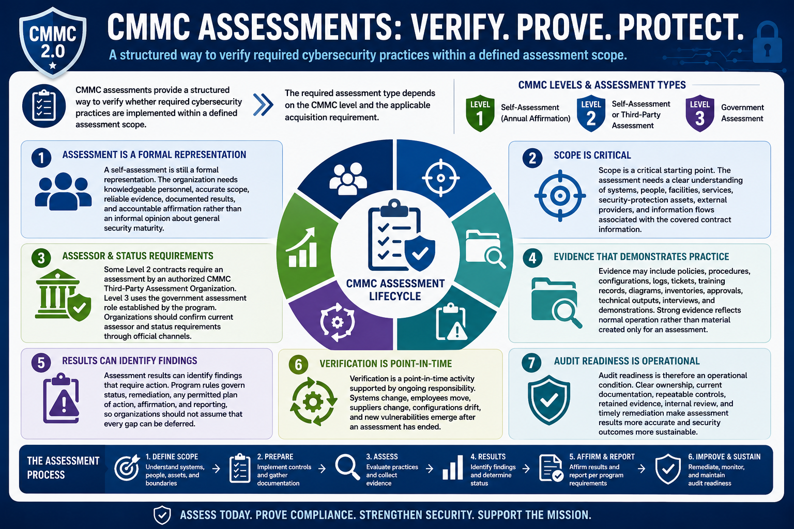

What Is CMMC 2.0?
Assessments and Verification
Connecting to LMS... Progress: in progress
Version 1.0 | Date: 2026-06-16 | Educational overview of CMMC 2.0 concepts.

Narration
CMMC assessments provide a structured way to verify whether required cybersecurity practices are implemented within a defined assessment scope. The required assessment type depends on the CMMC level and the applicable acquisition requirement.
A self-assessment is still a formal representation. The organization needs knowledgeable personnel, accurate scope, reliable evidence, documented results, and accountable affirmation rather than an informal opinion about general security maturity.
Some Level 2 contracts require an assessment by an authorized CMMC Third-Party Assessment Organization. Level 3 uses the government assessment role established by the program. Organizations should confirm current assessor and status requirements through official channels.
Scope is a critical starting point. The assessment needs a clear understanding of systems, people, facilities, services, security-protection assets, external providers, and information flows associated with the covered contract information.
Evidence may include policies, procedures, configurations, logs, tickets, training records, diagrams, inventories, approvals, technical outputs, interviews, and demonstrations. Strong evidence reflects normal operation rather than material created only for an assessment.
Assessment results can identify findings that require action. Program rules govern status, remediation, any permitted plan of action, affirmation, and reporting, so organizations should not assume that every gap can be deferred.
Verification is a point-in-time activity supported by ongoing responsibility. Systems change, employees move, suppliers change, configurations drift, and new vulnerabilities emerge after an assessment has ended.
Audit readiness is therefore an operational condition. Clear ownership, current documentation, repeatable controls, retained evidence, internal review, and timely remediation make assessment results more accurate and security outcomes more sustainable.